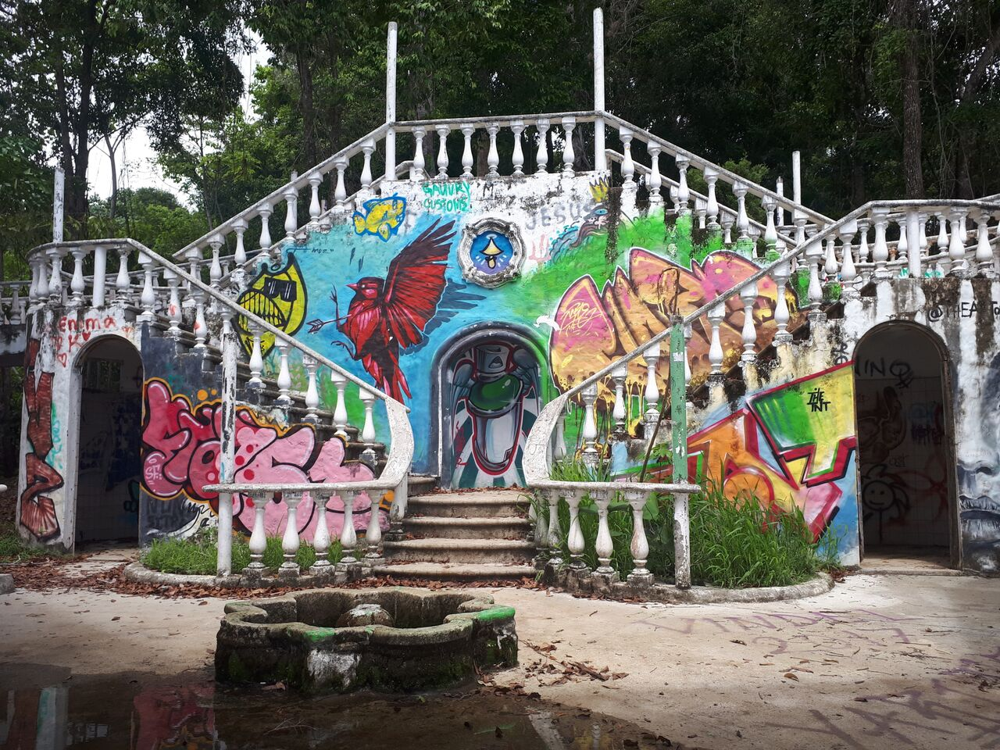

Adrien Cloutier
PhD Candidate in Political Science | Université Laval
Adrien Cloutier is a PhD candidate in Political Science at Université Laval, where his research focuses on political communication, media agenda, and interdisciplinary digital tools.
He is co-creator of the École interdisciplinaire outils & méthodes (EIOM), a summer school that brings together students, researchers, and professionals each year. Former coordinator of the Réseau francophone international en conseil scientifique (RFICS), he contributed to structuring initiatives connecting the academic world and public decision-makers in the Americas, Africa, and Europe.
Adrien is also the creator of Radar+, an algorithm that continuously collects front pages from major media outlets to measure the salience of public issues in Quebec, Canada, and the United States. His work highlights the role of media in shaping public opinion and the evolution of contemporary political debates.
Passionate about teaching, he teaches courses on quantitative methods and digital tools at Université Laval. His expertise lies at the intersection of research, knowledge dissemination, and the development of interdisciplinary digital tools.
Projects and Achievements
My main projects are at the intersection of research, teaching, and the development of interdisciplinary digital tools.
My CV
Below you will find my curriculum vitae detailing my academic and professional background.
Contact Me
Feel free to contact me with any questions about my research, my projects, or for collaboration opportunities.